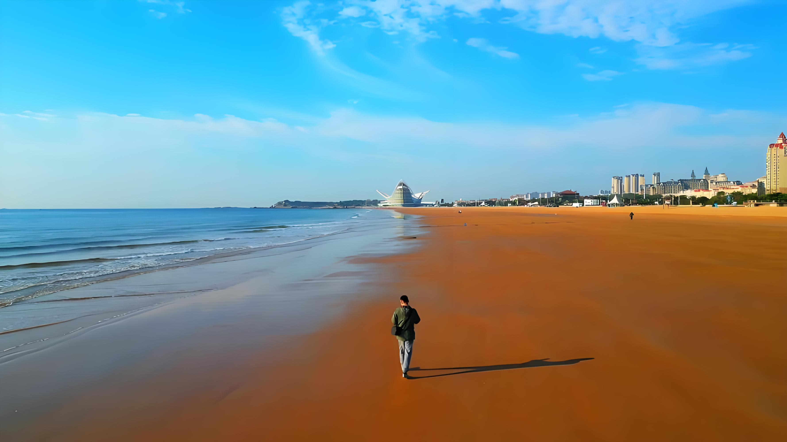

Nestled along the southern coast of the Shandong Peninsula, Badaguan Beach is celebrated as one of the most beautiful beach areas in China. The name means Eight Great Passes, referring to the eight military defense roads built during the German occupation in the early 1900s.
Today, these tree-lined avenues are lined with European-style villas from the colonial era, creating a unique blend of architectural styles including Gothic, Romanesque, and Baroque. The area has been used as a filming location for numerous Chinese television dramas.
The beach itself features golden sands, clear waters, and gentle waves perfect for swimming. The surrounding area offers scenic walking paths, beautiful gardens, and charming cafes where you can enjoy the sea breeze.
← Back to Home